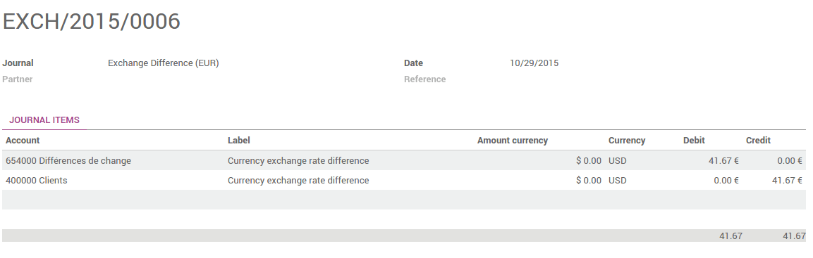

Overview
Choosing to use the multi-currency option in Odoo will allow you to send sales invoices, quotes and purchase orders or receive bills and payments in currencies other than your own. With multi-currency, you can also set up bank accounts in other currencies and run reports on your foreign currency activities.
Configuration
Turn on multi-currency
In the accounting module, Go to and flag Allow multi currencies, then click on Apply.
Exchange Rate Journal
The Rate Difference Journal records the differences between the payment registration and the expected amount. For example, if a payment is paid 1 month after the invoice was issued, the exchange rate has probably changed. The fluctuation implies some loss or profit that are recorded by Odoo.
You can change it in the settings:
View or edit rate being used
You can manually configure the currency rates in . Open the currencies you want to use in Odoo and edit it. Make sure the currency is active.
Click on View Rates to edit it and to see the history :

Click on Create to add the rate. Fill in the date and the rate. Click on Save when you are done.

Live Currency Rate
By default, the currencies need to be updated manually. But you can synchronize it with Yahoo or the European Central Bank. In , go to the Live Currency Rate section.
Choose the interval : Manually, Daily, Weekly or Monthly. You can always force the update by clicking on Update Now. Select the provider, and you are set !

Note
Only the active currencies are updated
Configure your charts of account
In the accounting application, go to . On each account, you can set a currency. It will force all moves for this account to have the account currency.
If you leave it empty, it means that it can handle all currencies that are Active.

Configure your journals
In order to register payments in other currencies, you have to remove the currency constraint on the journal. Go to the accounting application, Click on More on the journal and Settings.

Check if the currency field is empty or in the foreign currency in which you will register the payments. If a currency is filled in, it means that you can register payments only in this currency.

How is Odoo's multi-currency working?
Now that you are working in a multi-currency environment, all accountable items will be linked to a currency, domestic or foreign.
Sales Orders and Invoices
You are now able to set a different currency than the company one on your sale orders and on your invoices. The currency is set for the whole document.

Purchases orders and Vendor Bills
You are now able to set a different currency than the company one on your purchase orders and on your vendor bills. The currency is set for the whole document.

Payment Registrations
In the accounting application, go to Sales > Payments. Register the payment and set the currency.

Bank Statements
When creating or importing bank statements, the amount is in the company currency. But there are now two complementary fields, the amount that was actually paid and the currency in which it was paid.

When reconciling it, Odoo will directly match the payment with the right Invoice. You will get the invoice price in the invoice currency and the amount in your company currency.
Exchange Rate Journal
Go to and look for the Exchange difference journal entries. All the exchange rates differences are recorded in it.
